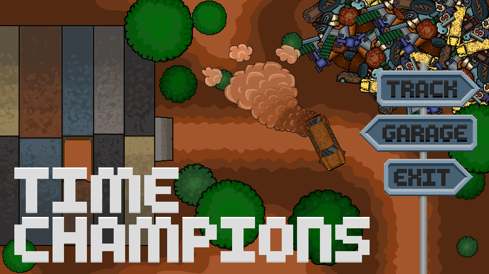

TimeChampions
What is TimeChampions
TimeChampions is a fun and challenging top down view racing game
made as the final assignment for the minor 'Creative Design & Technology'
at the Saxion university of applied sciences.
Why did I create this game
This minor differs a lot from my main study, which is Automotive Engineering.
To challenge myself and explore my creative side I dicided that trying to
make a video game and all the visuals for it was a good and challenging
way to test my skills and knowledge. I did however want to keep some connection
with my main study, which is way I decided to create a racing game.
Gamemaker Studio 2
To create my game I decided to use Gamemaker Studio 2. This engine is a great
beginner friendly tool for creating 2D games. It has great support which allowed
me to find all the help I needed.
Krita
To create the visuals for my game I decided to use Krita. This tool is an Image
manipulation program. As the name implies it allows for image manipulation
but additionally it is also a painting program. This combination of features
allowed me to create the cars in the game, which are based on real cars.


Download
To download TimeChampions click the link below.
TimeChampions Download